파일 업로드
MusicXML, MXL, musicxml 파일을 불러옵니다. mscz는 로컬 변환 API가 있을 때 자동 변환할 수 있습니다.
악보 디자이너 웹앱을 처음 여는 순간부터 MusicXML 업로드, 조옮김, 분석, 주석, 세션 저장, URL 공유, PDF 내보내기까지 따라 할 수 있는 한글 단계별 안내서입니다.
처음 사용자는 1장부터 4장까지 순서대로 읽고, 익숙한 사용자는 필요한 기능 장으로 바로 이동하세요.
MXL Studio는 MusicXML 악보를 브라우저에서 바로 열어 수업용 자료로 바꾸는 웹앱입니다. 화면은 악보를 중앙에 놓고, 왼쪽에는 변환 도구, 오른쪽에는 분석과 보조 도구를 배치합니다.
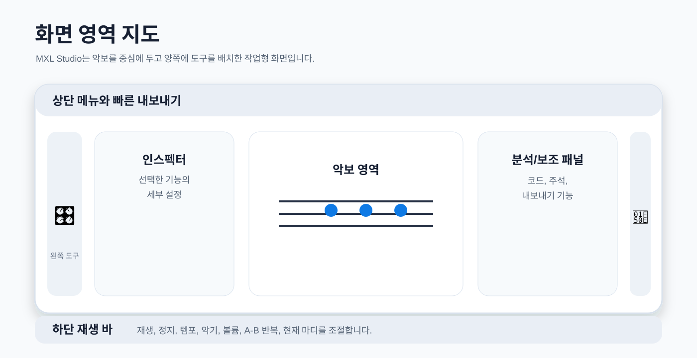
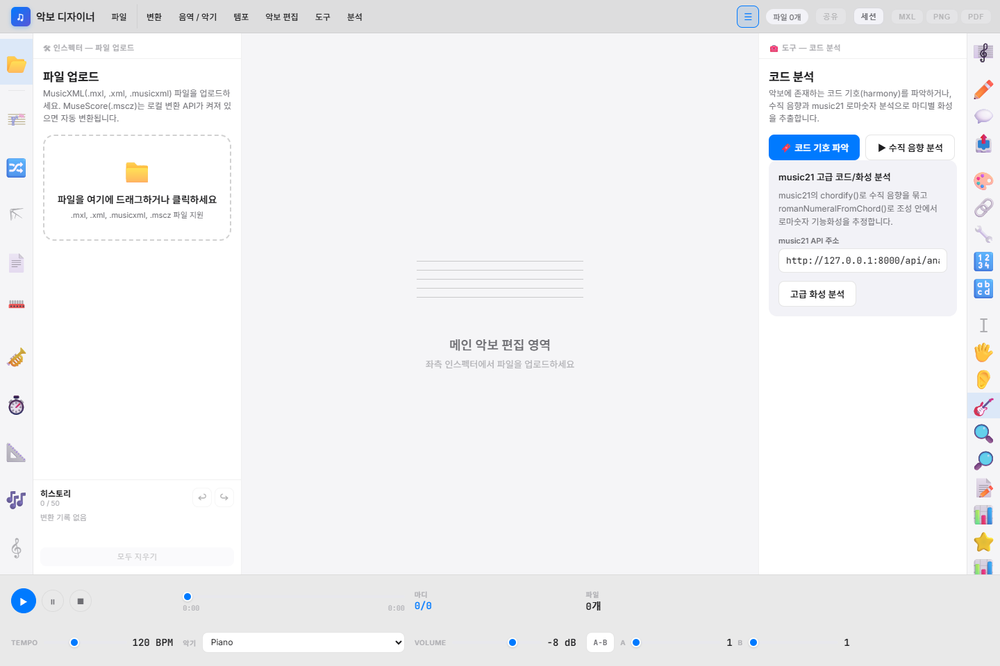
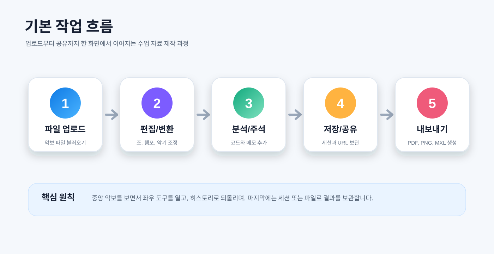
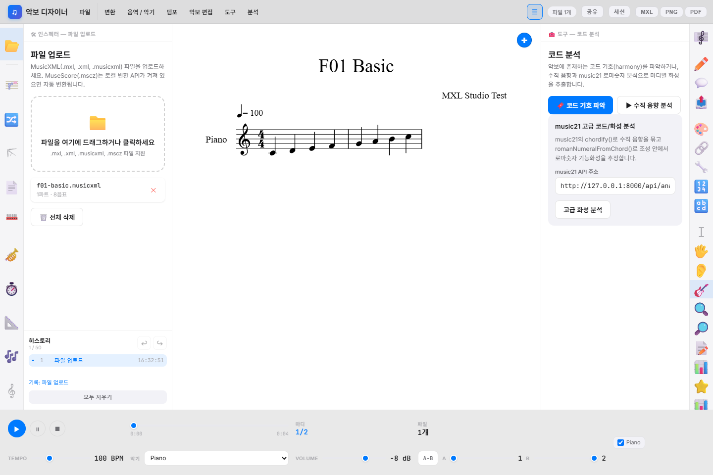
| 파일 형식 | 용도 |
|---|---|
| .mxl | 압축 MusicXML. MuseScore 등에서 내보낸 악보를 보관하기 좋습니다. |
| .xml, .musicxml | 일반 MusicXML. 구조 확인과 테스트에 편리합니다. |
| .mscz | 로컬 변환 API가 준비된 환경에서 MusicXML로 변환할 수 있습니다. |
왼쪽 하단 히스토리는 최근 작업을 순서대로 기록합니다. 실수했을 때 되돌리기 버튼을 누르면 이전 상태로 돌아갑니다. 여러 번 편집한 뒤에도 작업 흐름을 확인할 수 있어 수업 자료를 만들 때 안정적입니다.
왼쪽 도구는 악보 자체를 바꾸는 기능입니다. 조, 음역, 악기, 템포, 레이아웃처럼 결과 악보에 직접 반영되는 작업이 여기에 모여 있습니다.
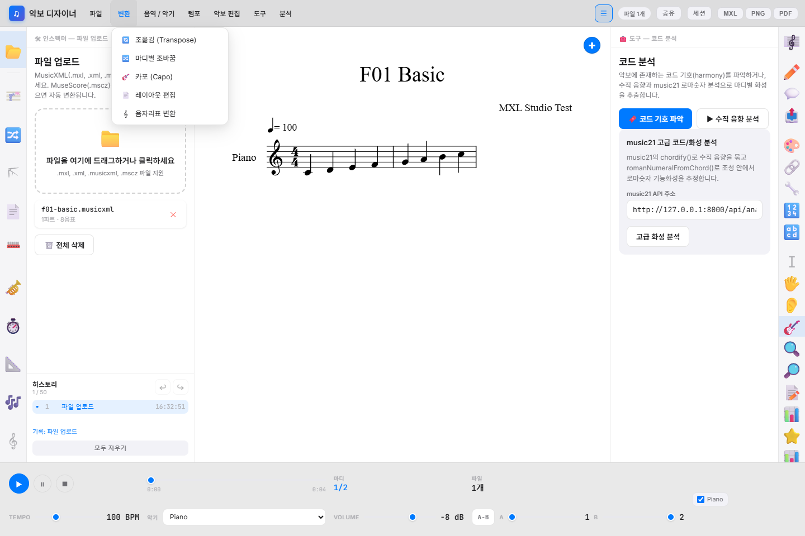
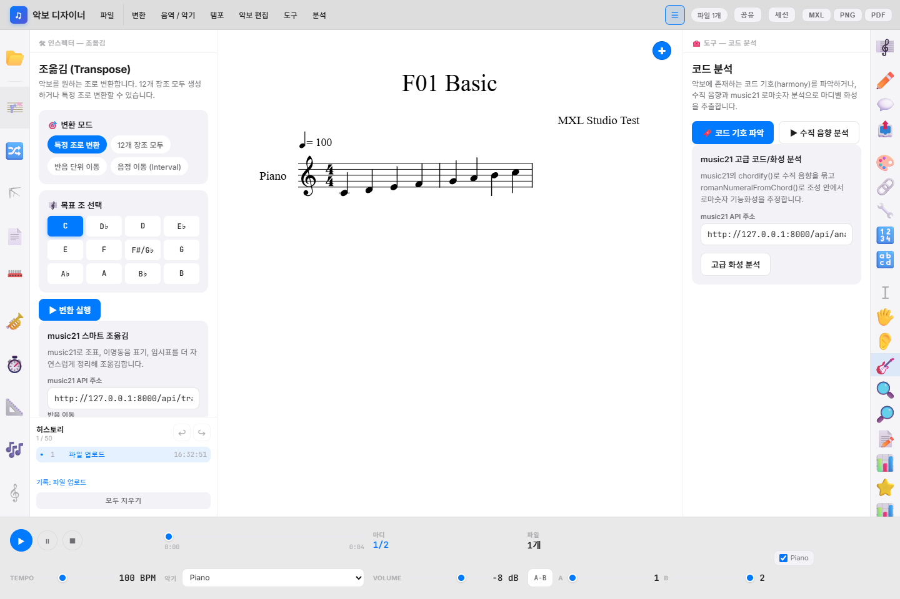
MusicXML, MXL, musicxml 파일을 불러옵니다. mscz는 로컬 변환 API가 있을 때 자동 변환할 수 있습니다.
특정 조, 12개 장조, 반음 단위, 음정 단위로 악보 전체를 변환합니다.
곡 중간의 특정 마디부터 조표를 바꾸거나 부분 조바꿈을 적용합니다.
기타 카포 위치에 맞춰 실제 운지와 들리는 음을 조정합니다.
악보 크기, 여백, 줄/페이지 브레이크, 마디 배치를 정리합니다.
악기 또는 사용자 지정 음역 안에 들어오도록 음을 자동 조정합니다.
클라리넷, 트럼펫 같은 이조 악기용 악보로 변환합니다.
전체 템포를 바꾸고 재생 속도와 표기 템포를 맞춥니다.
특정 마디에 템포 변화를 넣어 연습 구간을 세밀하게 제어합니다.
대체 연주, 쉬운 버전, 변형 구간을 작은 보조 악보로 추가합니다.
높은음자리표, 낮은음자리표 등 악보 읽기 목적에 맞게 음자리표를 바꿉니다.
오른쪽 도구는 수업용 해설, 분석, 시각 자료 제작을 돕습니다. 코드, 화성, 주석, 색깔, 운지, 난이도처럼 학생에게 보여 줄 정보를 더하는 기능이 많습니다.


여러 파트 중 필요한 파트만 추출하거나 불필요한 파트를 삭제합니다.
음표 머리, 쉼표, 보표, 기보 요소를 수업 목적에 맞게 바꿉니다.
TXT 가사를 가져오고 음절 단위로 악보에 배정합니다.
PNG, SVG, PDF와 텍스트 악보를 생성합니다.
음, 마디, 역할별 색상으로 학습 포인트를 시각화합니다.
선율에 3도/화성음을 추가해 합주 또는 화성 연습 자료를 만듭니다.
코드 기호를 정리하고 불필요한 코드, N.C. 표기를 다룹니다.
계이름/숫자 기반 학습 악보를 생성하고 원본 가사로 복원합니다.
가사 글꼴, 크기, 색상을 통일해 읽기 좋은 자료로 다듬습니다.
코드 기호, 로마 숫자, 종지, 조성 흐름을 분석합니다.
리코더, 칼림바 등 운지 표시와 청음 훈련 활동을 구성합니다.
성부 진행, 반복 음형, 곡 형식, 난이도, 음역/음표 통계를 확인합니다.
하단 바는 악보를 소리로 확인하고 연습 구간을 지정하는 공간입니다. 재생, 일시정지, 정지, 현재 마디, 템포, 악기, 볼륨, A-B 반복을 제공합니다.
| 컨트롤 | 사용 방법 | 활용 예시 |
|---|---|---|
| 재생/정지 | 왼쪽 하단의 재생 버튼을 누릅니다. | 편집 후 음 높이와 리듬이 맞는지 확인합니다. |
| 템포 | 템포 슬라이더 또는 BPM 값을 조정합니다. | 느린 연습 버전과 실제 연주 버전을 비교합니다. |
| 악기 | 악기 선택 상자에서 Piano, Strings, Flute 등을 고릅니다. | 수업 대상 악기에 가까운 음색으로 확인합니다. |
| A-B 반복 | A와 B 마디를 지정하고 A-B 버튼을 사용합니다. | 어려운 마디만 반복 연습합니다. |
| 파트 체크 | 파트 목록에서 재생할 파트를 켜고 끕니다. | 합주 파트별 연습 자료를 확인합니다. |
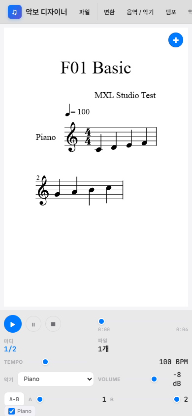
작업을 잃지 않으려면 자동 저장, 세션 슬롯, JSON 백업, 공유 URL을 목적에 맞게 함께 사용하세요.
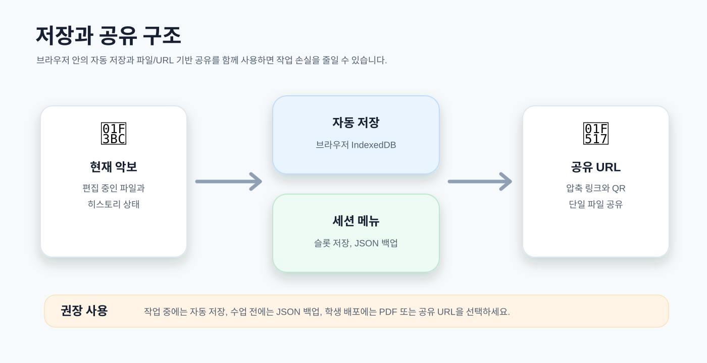
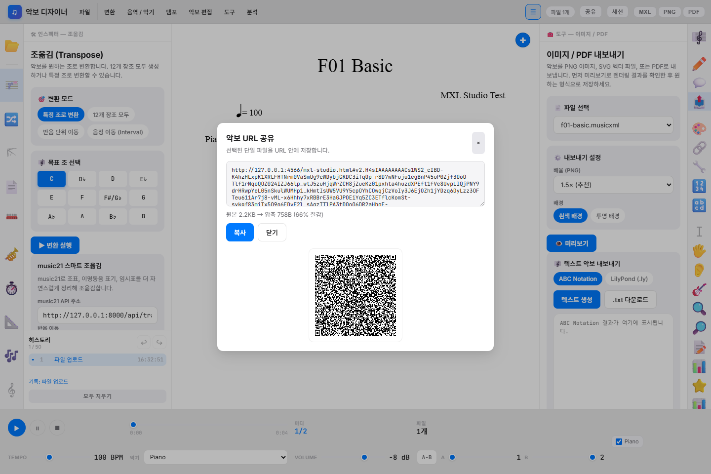
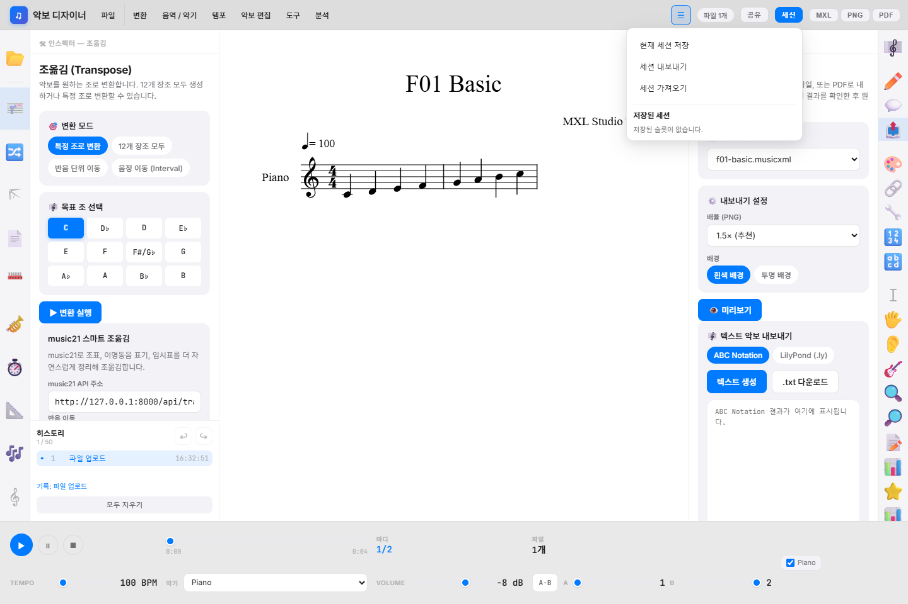
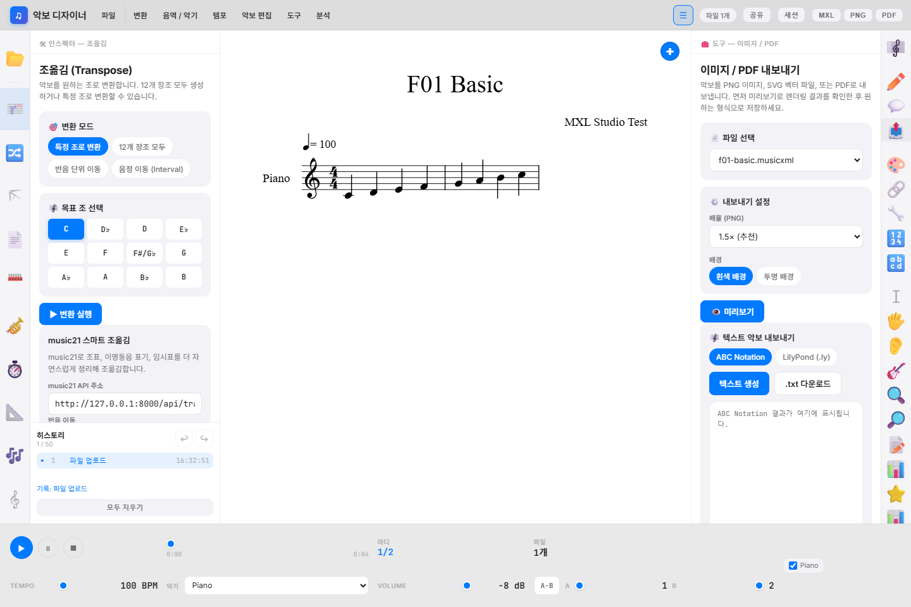
| 버튼/형식 | 추천 상황 | 주의할 점 |
|---|---|---|
| MXL | 다른 악보 편집기에서 다시 열어 수정할 때 | 편집 가능한 원본 보관용으로 가장 좋습니다. |
| PNG | 슬라이드, 웹 문서, 문제 이미지에 넣을 때 | 확대 인쇄보다 화면 자료에 적합합니다. |
| 인쇄, 학습지, 학생 배포용 최종본 | 브라우저 팝업 차단이 있으면 새 창이 열리지 않을 수 있습니다. | |
| ABC/LilyPond | 텍스트 기반 악보 도구와 연동할 때 | 복잡한 악보는 일부 표현이 단순화될 수 있습니다. |
아래 예시는 실제 수업 준비에서 자주 반복되는 흐름입니다. 각 단계는 메뉴 이름과 화면 위치를 기준으로 작성했습니다.
| 상황 | 해결 방법 |
|---|---|
| 파일이 열리지 않을 때 | MusicXML 계열 파일인지 확인하세요. PDF나 이미지 악보는 먼저 MusicXML로 변환해야 합니다. |
| 악보가 보이지 않을 때 | 업로드 직후 잠시 기다리세요. 그래도 비어 있으면 파일 자체가 비어 있거나 XML 구조가 손상되었을 수 있습니다. |
| 공유 URL이 너무 길 때 | URL 공유는 단일 파일에 적합합니다. 큰 편성 악보나 긴 곡은 PDF/MXL로 내보내서 공유하세요. |
| PDF가 새 창으로 열리지 않을 때 | 브라우저의 팝업 차단을 해제하고 다시 PDF 내보내기를 실행하세요. |
| 분석 API가 실패할 때 | music21 기반 고급 분석은 로컬 API 주소가 켜져 있어야 합니다. 기본 기능은 브라우저 안에서 바로 사용할 수 있습니다. |
| 작업을 되돌리고 싶을 때 | 왼쪽 하단 히스토리에서 이전 단계로 돌아갈 수 있습니다. 히스토리는 최근 50개까지 유지됩니다. |
설명서에 사용한 전체 화면 캡처입니다. 메뉴 이름을 찾거나 화면 위치를 다시 확인할 때 참고하세요.